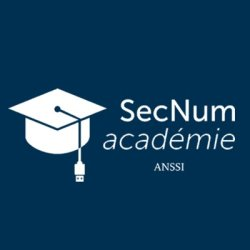

Mes Certifications
Dans le cadre de ma formation en BTS SIO SISR, j'ai obtenu et suivi plusieurs certifications professionnelles qui attestent de mes compétences en réseaux et cybersécurité.
Première Année

SecNumacadémie (ANSSI)
Résumé : Sensibilisation à la cybersécurité (Panorama SSI, authentification, web, nomadisme).
Voir la fiche de synthèse
CISCO CCNA1
Résumé : Fondamentaux des réseaux, modèles OSI/TCP-IP et configuration d'équipements.
Voir la fiche de synthèse
TryHackMe
Résumé : Entraînement pratique sur des laboratoires de pentest et de défense réseau.
Voir la fiche de synthèseDeuxième Année

TryHackMe
Formation pratique à travers des laboratoires virtuels couvrant les aspects offensifs et défensifs de la cybersécurité.
Sujets abordés : Analyse de vulnérabilités, Pentest, sécurité réseau, outils de sécurité (Nmap, Burp Suite, Wireshark).
📄 Télécharger la fiche de synthèse